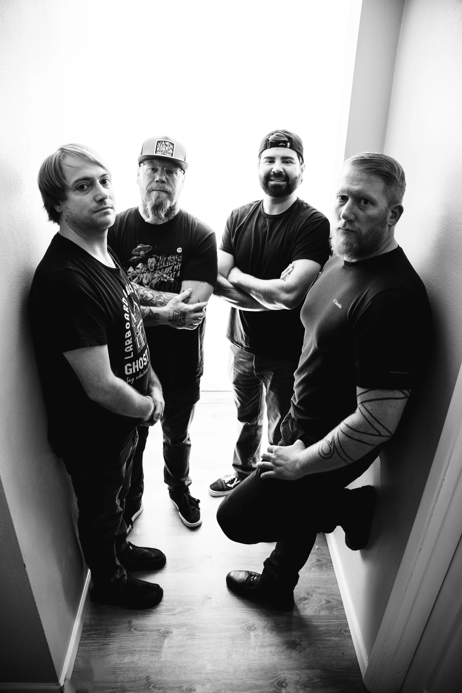
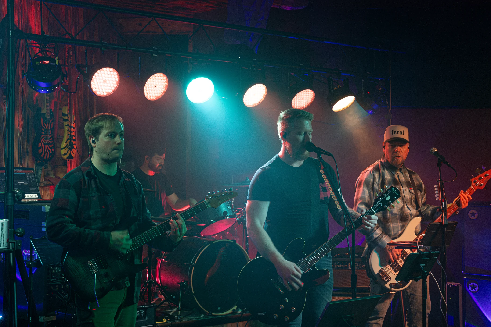

egosaint
2027 Upcoming Shows
- January 23rd @ The Mac Club
- February 27th @ Old World Deli
- March 13th @ The Triangle
- April 2nd @ The Pink Elephant
- May 8th @ The Mac Club
- June 12th @ The Yard Food Park
- August TBD @ Capital City Car Cruise In

Follow us for show announcements, photos from recent gigs, and live performance videos.
Find us on major streaming platforms.
The Booking Aspect
Egosaint has more than four hours of rock covers to draw from and mixes those sing along favorites with original songs. A full light show and professional live sound give even a small club the feel of a big rock show. If you’re booking a club night or a live event and want people on their feet, singing the chorus back to the band, that’s the kind of night egosaint loves to play.
We play it loud.
You sing it back.



Meet the band
A rock band from Salem, Oregon.
Before forming egosaint, the members spent more than 15 years playing in other bands across Oregon’s Willamette Valley. Matt, Spencer, and Wes started playing together after their previous bands came to an end. Chad joined on lead guitar, completing the Salem four piece.
Their original alternative rock draws on the guitar hooks of ’90s alt rock and the grooves of early 2000s garage rock. In the 2020s, when a night of local live music can feel harder to come by, egosaint writes for the stage. They want people to walk into a room, hear a song for the first time, and leave humming it.
- Spencer Hormann
- Guitar and lead vocals
- Chad Chlopek
- Lead guitar
- Matt Robberstad
- Bass
- Wes Fisher
- Drums